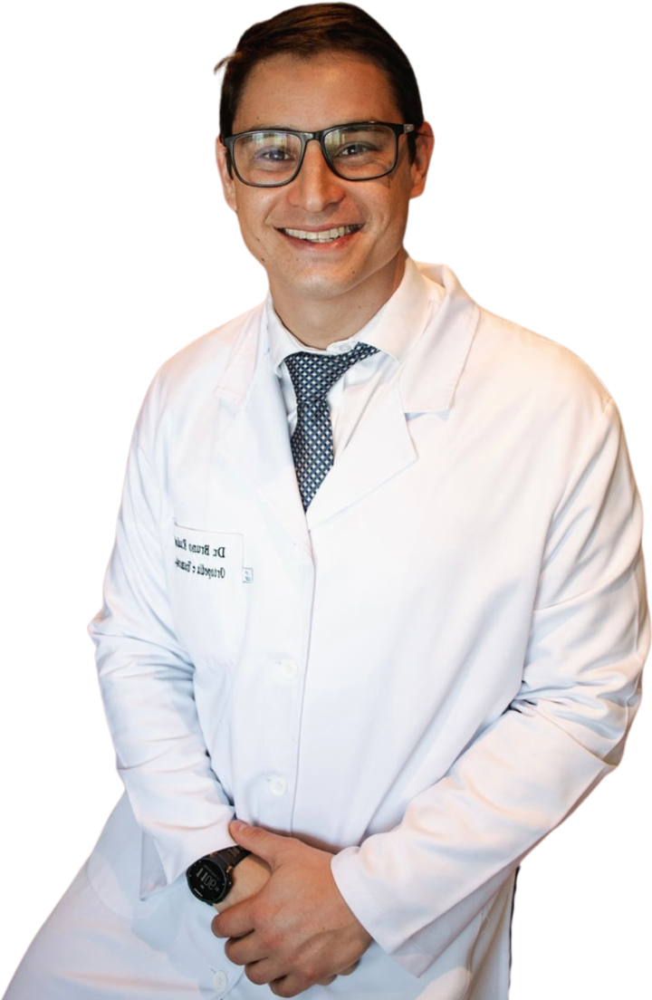

Início · Sobre o Dr. Bruno
Dr. Bruno Rudolph: de Belo Horizonte a Salvador.
Bruno Rudolph Correa — Ortopedia e Traumatologia · CRM-BA 39298 · RQE 21812. Residência e R4 em cirurgia do joelho na Santa Casa de Belo Horizonte; em Salvador desde 2022.
Apresentação
Quem é
Ortopedista e traumatologista, o Dr. Bruno atua em dores no joelho e lesões esportivas. Formou-se em Medicina em Vitória (ES), fez residência em Ortopedia e Traumatologia e R4 em cirurgia do joelho na Santa Casa de Belo Horizonte e, em 2022, chegou a Salvador.
“Dr. Bruno Rudolph fez Residência Médica e Cirurgia de Joelho na Santa Casa de Belo Horizonte e atua no tratamento de dores no joelho e lesões esportivas.”
Página do Dr. Bruno (drbrunorudolph.com.br, 2025) · ver a fonte
“A ideia é transbordar amor e conhecimento. Amor pela vida e conhecimento que permita vivê-la de forma plena.”
Site antigo do Dr. Bruno, “sobre mim” (2021) · ver a fonte

Formação
Formação
- 2016Medicina · Multivix
Graduação em Vitória (ES).
formação declarada - 2018–2020Residência em Ortopedia e Traumatologia
Santa Casa de Belo Horizonte; residente no CNES desde novembro de 2018.
declarada · CNES - 2022R4 em Cirurgia do Joelho
Especialização (R4) na Santa Casa de Belo Horizonte.
formação declarada - PósMedicina do esporte
Pós-graduações em medicina do esporte e em nutrição e fisiologia do exercício.
formação declarada - 2022 →Salvador
Primeiro vínculo na Bahia em junho de 2022; hoje, consultório no Horto Offices.
CNES · Google
Registro
Registro e especialidade
CRM-BA 39298 · RQE 21812
Registro de qualificação de especialista em Ortopedia e Traumatologia, como ele assina na página dele.
Joelho e esporte
R4 em cirurgia do joelho na Santa Casa de BH; pós-graduações em medicina do esporte e em nutrição e fisiologia do exercício (formação declarada).
Esporte
Esporte, por dentro
“Sou apaixonado por esporte e pela natureza. Hoje sou triatleta amador, mas já fui sedentário e sobrepeso, com uma rotina extremamente estressante.”
Site antigo do Dr. Bruno, “sobre mim” (2021) · ver a fonte
Também participou, como aluno, do 33º Curso de Intervenções Guiadas pela Ultrassonografia.
Hoje
Em Salvador
O consultório fica no Edif. Horto Offices, sala 404, no Horto Florestal — endereço da ficha do Google. No cadastro público do CNES (outubro de 2026), ele aparece como ortopedista e traumatologista do Hospital Mater Dei Salvador, do Hospital da Bahia e do Hospital Prohope.
Dúvidas frequentes
Perguntas comuns
Qual é a especialidade do Dr. Bruno?
Ortopedia e Traumatologia (RQE 21812). No joelho, fez R4 em cirurgia do joelho; no esporte, pós-graduação em medicina do esporte.
Onde ele se formou?
Medicina na Multivix, em Vitória (ES), em 2016; residência e R4 na Santa Casa de Belo Horizonte.
Onde ele atende?
No Horto Offices, sala 404, Horto Florestal, Salvador. Veja onde atendo.
Agende
Joelho doendo ou lesão no esporte? Comece pela conversa.
Consulta com hora marcada no Horto Offices, Horto Florestal, Salvador. Fale pelo WhatsApp (71) 98131-8228.